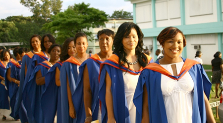

History and Regional Presence of UWI
September 25, 2025 by Britney Hawthorne
The University of the West Indies (UWI) is a premier regional institution of higher learning that serves 17 English-speaking countries and territories in the Caribbean. Established in 1948, it began as a college of the University of London in Jamaica with only 33 medical students. Over the decades, UWI has expanded into a full-fledged university with campuses across the region—Mona in Jamaica, St. Augustine in Trinidad and Tobago, Cave Hill in Barbados, and the Five Islands Campus in Antigua and Barbuda—along with an Open Campus that provides online and flexible learning. Its mission is to advance education, research, and innovation while contributing to the social and economic development of the Caribbean.
Since its founding, UWI has played a unifying role in the Caribbean by serving as a shared institution for higher learning across multiple nations. The establishment of the Mona Campus in Jamaica marked the beginning of this vision, followed by the creation of the St. Augustine Campus in Trinidad and Tobago in 1960, and the Cave Hill Campus in Barbados in 1963. More recently, the Five Islands Campus in Antigua and Barbuda was opened in 2019 to increase access for students in the Eastern Caribbean. With the Open Campus, UWI extends its reach even further, offering distance education to thousands of learners across the region. This growth reflects the university’s commitment to making tertiary education accessible to all Caribbean people, regardless of geography.
Academic Excellence and Global Impact
September 25, 2025 by Britney Hawthorne

UWI is internationally recognized for its academic excellence and research output, especially in areas that address the unique challenges of the Caribbean, such as climate change, sustainable development, public health, and cultural studies. It plays a critical role in training professionals, leaders, and policymakers who shape the region’s future. The university also fosters cultural pride and regional integration, bringing together students from diverse Caribbean backgrounds. Through partnerships with global institutions, UWI continues to expand opportunities for its students and staff, maintaining its position as a leader in higher education not just in the Caribbean, but also on the global stage.
UWI's influence extends beyond academics, as it consistently ranks among the top universities worldwide, earning recognition in international university rankings such as Times Higher Education. The institution has produced Nobel laureates, prime ministers, and leading scholars who have made significant contributions both regionally and globally. Its research centers and institutes are dedicated to tackling critical issues like renewable energy, economic development, and disaster resilience—fields that have global relevance but are particularly vital to small island developing states. By combining world-class research with a strong cultural identity, UWI continues to elevate the Caribbean’s presence on the global stage while preparing its graduates to thrive in an interconnected world.